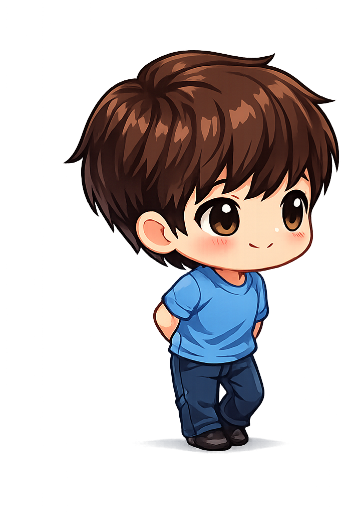
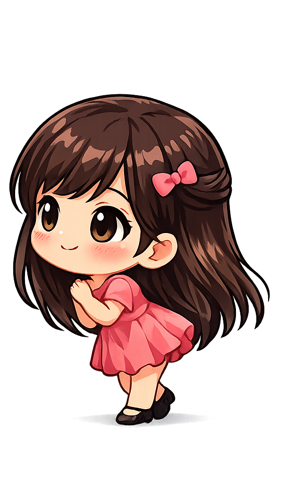

Haz clic en el corazón
Para la mujer más bella de este universo!
Conocerte fue lo más hermoso que me pudo haber pasado, jamás me imaginé que un día te iba a conocer, simplemente no estaba en mis planes, pero sí, llegaste de la nada y me enamoré desde el primer momento en que te vi.
No sé cómo lo hiciste ni mucho menos si fue o no tu intención, pero si me alegra que haya sucedido, porque ahora cada que pienso en ti, sonrío.
Si me preguntan qué cambió en mí este último tiempo, no voy a hablar de trabajo, ni de metas, ni de nada de eso. Voy a decir tu nombre con toda tranquilidad y sin dudarlo mi hermosa mujercita.
Porque desde que estás en mi vida, descubrí lo bonito que es dedicarle mi tiempo a lapersona que amo, me descubrí fijándome en detalles que antes pasaban de largo. La forma en que dices mi nombre cuando estás cansada. El cómo se te ilumina la cara cuando algo te hace gracia de verdad. Esa costumbre tuya de preguntar cómo estoy aunque tú tengas el día patas arriba.
No eres lo mejor que me pasó por una razón grande y épica, sino que eres lo mejor que me pasó por mil razones pequeñas que se me quedan grabadas en el corazón. Por la manera en que me escuchas sin interrumpir, por cómo te ríes de mis tonterías aunque las hayas escuchado antes, por esa terquedad tuya que sale cuando algo te importa, y que a mí me hace sentir que contigo las cosas van en serio.
Antes pensaba que el cariño se demostraba con gestos grandes, pero contigo aprendí que a veces basta con quedarte. Con quedarte en una conversación aunque ya sea muy tarde y estemos cansados, con quedarte aunque el día haya sido agotador o malo, con quedarte aunque no tengas las palabras exactas. Ese tipo de quedarse pesa más que cualquier cosa que me hayan dicho antes amor de mi vida.
Te escribo esto porque me da paz saber que tengo a alguien con quien no necesito actuar. Con quien puedo estar callado, cansado, distraído, y aún así sentirme bien. Eso no lo había sentido antes y me encanta.
No sé qué nos espere más adelante, no sé si todo va a salir perfecto. Lo que sí sé es que hoy, ahora mismo, no cambiaría por nada el haberte encontrado. Eres mi lugar seguro, mi amor bonito, mi mujercita y sobre todo, la niñita de mis ojos, y el hecho de poder decir eso sin que me suene raro, sin que me pese, me dice todo lo que necesito saber.
Gracias por estar. Gracias por quedarte. Gracias por hacerme sentir que llegar a casa, aunque sea en un mensaje, tiene sentido.
Con todo lo que soy y con todo mi corazón...
Te amo infinitamente y te extraño de la misma manera.
Christian

